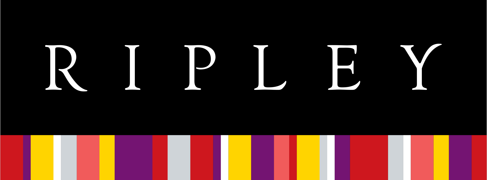

Mide, Analiza y Mejora la Satisfacción de tus Servicios de Tecnologías de Información provistos a tu organización
Contamos con una vasta experiencia, gracias a clientes de diversos sectores, que han confiado en nosotros para ayudarles a determinar:
¿Qué servicios entregados a la organización son prioritarios?
¿Cuáles son aspectos son los de mayor impacto para mejorar tales servicios?
¿Donde? Es decir qué áreas o segmentos de usuarios son prioritarios.
¿Cómo mejorar aquellos servicios?
Algunos empresas que ya han confiando en nosotros ...
-
-
-

-
